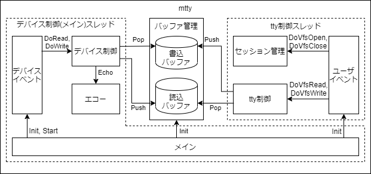

モジュール構成
mttyのモジュール構成を次に示す。

| モジュール名 | 動作スレッド | 概要 |
| メイン | デバイス制御（メイン）スレッド | デバイスイベント、ユーザイベント、バッファ管理の初期化を行い起動する。 |
| デバイスイベント | デバイス制御（メイン）スレッド | デバイスファイルをオープンし監視する。読み込み可能および書き込み可能となった時、デバイス制御を呼び出す。 |
| デバイス制御 | デバイス制御（メイン）スレッド | デバイスファイルからデータを読み込み、読込バッファに追加しエコーを呼び出す。また、書込みバッファからデータを取り出し、デバイスファイルにデータを書き込む。 |
| エコー | デバイス制御（メイン）スレッド | 制御コードを表示可能な文字列に変換し、デバイスファイルに書き込む。 |
| バッファ管理 | デバイス制御（メイン）スレッド tty制御スレッド |
読込バッファと書込バッファを管理する。 |
| ユーザイベント | tty制御スレッド | ttyファイルを作成し、ユーザプロセスからの制御を待ち合わせる。オープン要求とクローズ要求はセッション管理を呼び出し、読み込み要求と書き込み要求はtty制御を呼び出す。 |
| セッション管理 | tty制御スレッド | TBD |
| tty制御 | tty制御スレッド | ttyファイルの読み込み要求に対しては読込バッファからデータを取り出して応答し、書き込み要求に対しては書込バッファにデータを追加して応答する。 |